Abra o seu porta-lápis
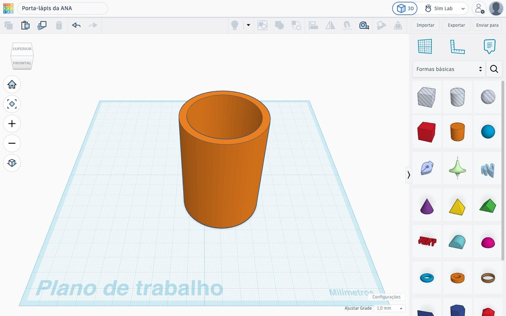
Foto da tela.
No Tinkercad, na lista dos seus projetos, clique no cartão do porta-lápis que você fez na Aula 2 (o que você batizou). Ele abre no editor.
A peça está lá: o copo laranja, alto, com o fundo e o vazio por dentro.
- Não acho o cartão
- Procure pelo nome que você deu na Aula 2. Se der muito trabalho, chame o professor: todos os cartões novos têm um nome sorteado esquisito.
- Abriu um projeto vazio
- Você abriu outro cartão ou criou um projeto novo. Volte à lista e escolha o do porta-lápis.
- O porta-lápis não está mais lá
- Refaça a Aula 2 antes de seguir: hoje o ponto de partida é ele.
Selecione tudo e copie: Ctrl + A, depois Ctrl + C
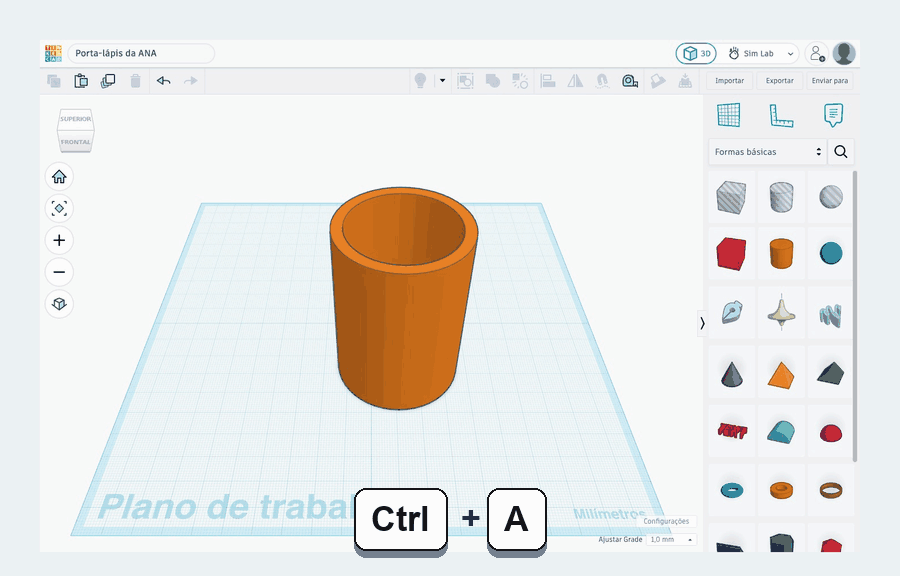
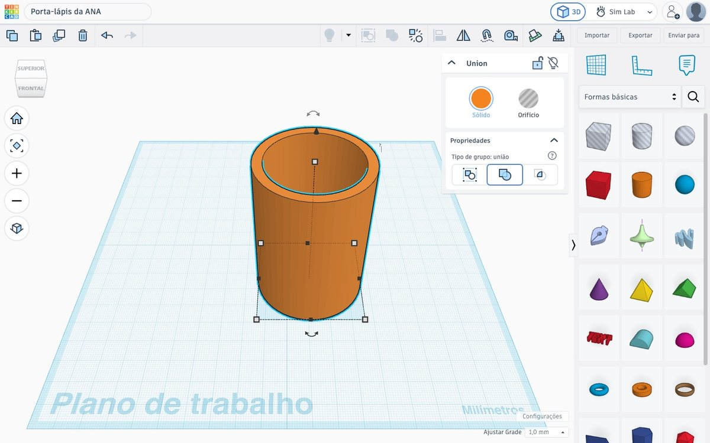
O clipe repete sozinho. Repare onde o cursor vai antes de clicar.
Foto da tela.
Clique num lugar vazio do plano para o teclado ir para lá. Segure Ctrl e aperte A: o porta-lápis fica selecionado, com contorno azul.
Agora, segure Ctrl e aperte C: ele foi copiado. Nada muda na tela — é como copiar um texto: a cópia está guardada e espera.
Em computador Mac, use Cmd no lugar de Ctrl.
- Ctrl + A não faz nada
- Clique uma vez num lugar vazio do plano antes: o atalho só funciona com o editor em foco.
- Selecionou e eu não sei se copiei
- Aperte Ctrl + C de novo. Copiar duas vezes não faz mal.
Crie um projeto novo

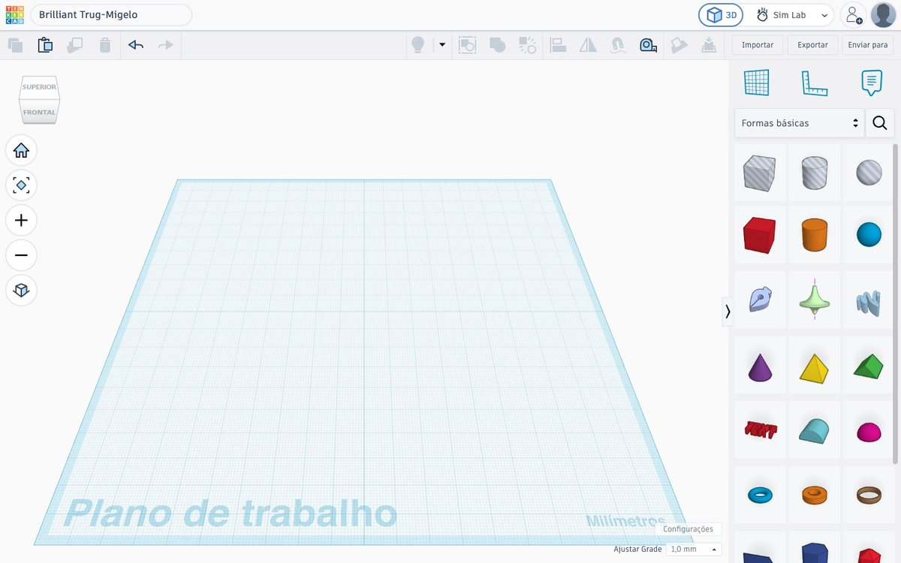
O clipe repete sozinho. Repare onde o cursor vai antes de clicar.
Foto da tela.
Volte à lista de projetos (o logotipo do Tinkercad, no canto de cima à esquerda, leva para lá). No canto de cima à direita, clique em + Criar e, na primeira linha, em Projeto 3D.
Abre um projeto vazio, com um nome sorteado (o seu será outro, diferente do da figura). O porta-lápis original continua guardado no projeto de antes.
- Perdi a cópia ao trocar de projeto
- Não perde: a cópia fica guardada enquanto você não copiar outra coisa. Se tiver dúvida, volte ao porta-lápis e aperte Ctrl + A e Ctrl + C de novo.
- Abriu o projeto antigo
- Você clicou num cartão em vez do botão. Use o + Criar do canto de cima à direita.
Cole: Ctrl + V
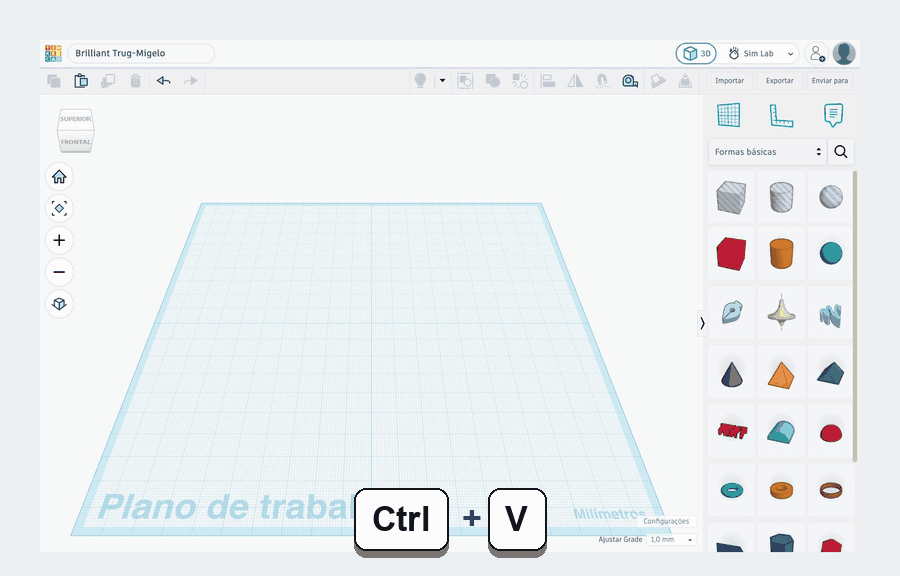
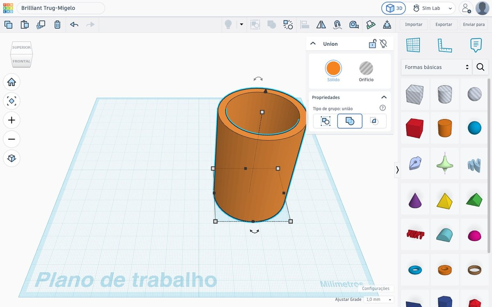
O clipe repete sozinho. Repare onde o cursor vai antes de clicar.
Foto da tela.
Clique num lugar vazio do plano e aperte Ctrl + V (no Mac, Cmd + V).
O porta-lápis aparece no projeto novo, inteiro: o copo, o fundo e o vazio.
- Não colou nada
- A cópia se perdeu. Volte ao porta-lápis, aperte Ctrl + A e Ctrl + C, abra o projeto novo e tente de novo.
- Colou duas vezes
- Aperte Ctrl + Z para desfazer uma. Ficou um copo em cima do outro e só um deve ficar.
Arraste um Tórulo para a esquerda do copo
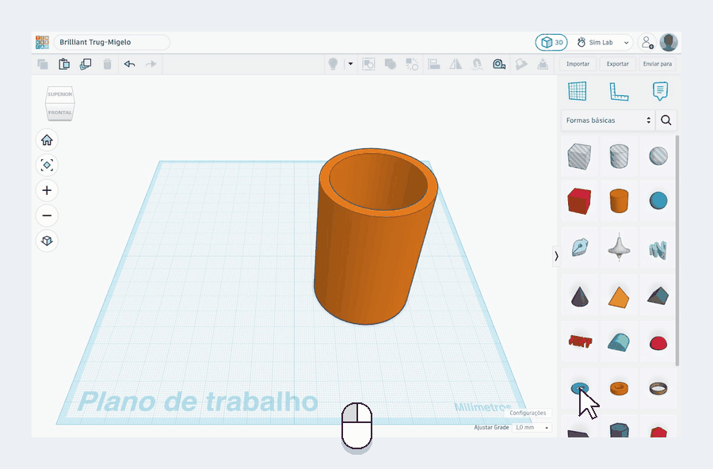
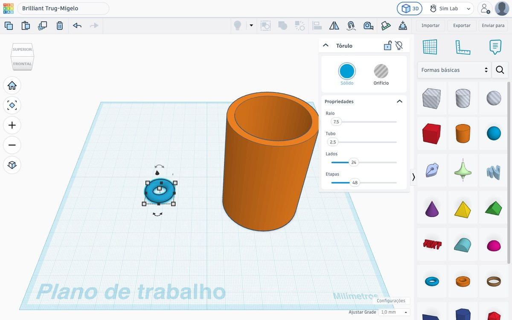
O clipe repete sozinho. Repare onde o cursor vai antes de clicar.
Foto da tela.
Na coluna da direita, procure o anel azul, com o nome Tórulo (fica na fileira de baixo; role a coluna se precisar).
Segure o botão esquerdo em cima dele, arraste para a esquerda do copo — um pedaço vazio do plano — e solte.
O anel azul está deitado, como uma rosquinha na mesa. Abre o painel Tórulo, com Raio e Tubo.
- Não acho o Tórulo
- Ele é azul e fica no fim da coluna de formas. Role a coluna com o mouse.
- Soltei em cima do copo
- Arraste o anel de novo para o plano vazio, ao lado. Em cima do copo ele nasceria lá no alto.
- As alças ficaram escondidas
- Aproxime com o − da barra da esquerda para o plano ficar menor, ou arraste o anel para um lugar com mais espaço.
Raio = 14 e Tubo = 4
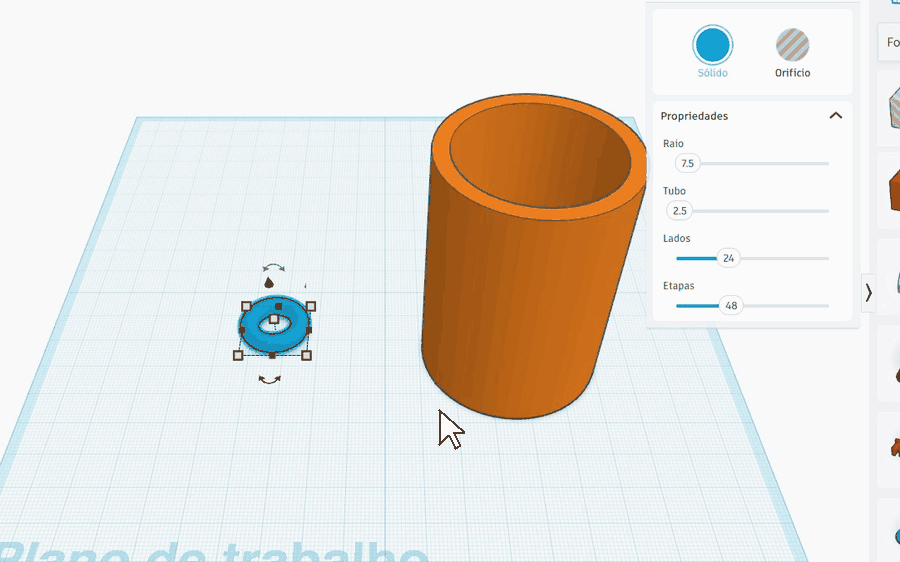
O clipe repete sozinho. Repare onde o cursor vai antes de clicar.
Foto da tela.
No painel do Tórulo, no campo Raio, apague e escreva 14, aperte Enter. No campo Tubo, escreva 4 e Enter.
Raio é o tamanho do círculo grande, do meio do anel até o meio do tubo. Tubo é a grossura do próprio anel.
- Digitei e nada mudou
- Falta o Enter depois de cada número.
- O número ficou estranho
- Clique no campo, aperte Ctrl + A (no Mac, Cmd + A) e escreva de novo.
Ponha o anel EM PÉ: a seta curva de cima
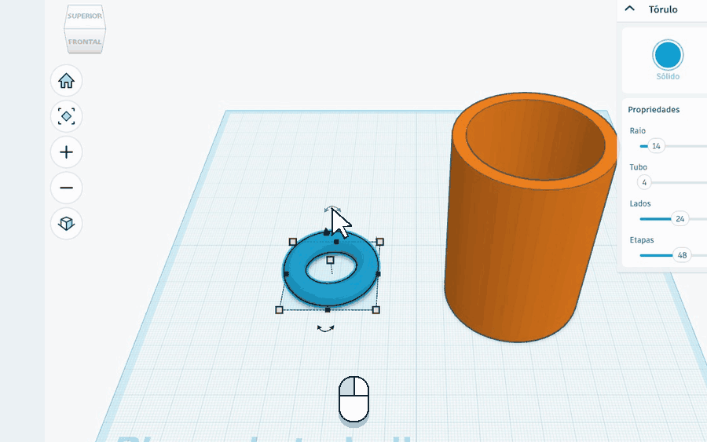
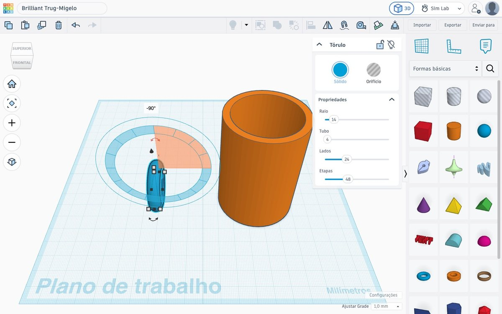
O clipe repete sozinho. Repare onde o cursor vai antes de clicar.
Foto da tela.
Acima do anel há uma seta curva pequenininha, em cima do triângulo preto. Segure o botão esquerdo nela e arraste devagar para a direita e para baixo.
Aparece um transferidor colorido, com um número em cima. Arraste até o número mostrar 90° (pode vir com sinal de menos: −90°) e solte.
O anel levanta: ele fica em pé, como uma roda de bicicleta, e de frente para a lateral do plano — fininho, visto de lado.
- O número não pára em 90
- Arraste de pouquinho em pouquinho, olhando o número. Se passar, volte um pouco sem soltar.
- Girou para o lado errado
- Pode ficar −90° ou 90°: os dois servem. O que importa é o anel ficar em pé.
- Não acho a seta curva
- Ela fica acima do triângulo preto de subir. Aproxime a câmera com o + se estiver muito pequena.
Vire o anel DE FRENTE: a seta curva de baixo
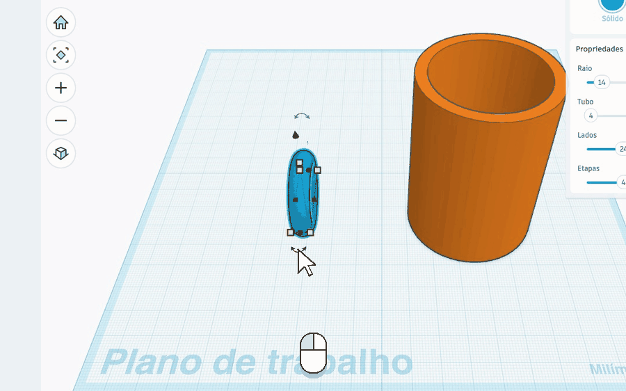
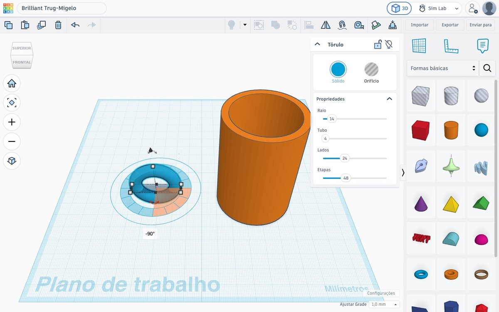
O clipe repete sozinho. Repare onde o cursor vai antes de clicar.
Foto da tela.
Abaixo do anel há outra seta curva, a de baixo. Segure o botão esquerdo nela e arraste em volta do anel, num arco, subindo para a direita (uma linha reta não chega nos 90°).
O transferidor aparece de novo. Arraste até o número mostrar 90° (ou −90°) e solte.
O anel gira como uma porta e fica de frente para você: agora dá para ver o buraco do anel, como a roda de um carro visto de lado.
- O transferidor trava em 40 ou 50
- Você está arrastando em linha reta. Faça um arco, como se desenhasse o pedaço de um círculo em volta do anel.
- O anel voltou a ficar deitado
- Você girou a seta de cima de novo. Aperte Ctrl + Z e use a de baixo.
- Passei de 90
- Continue arrastando até voltar ao número certo, ou aperte Ctrl + Z e recomece.
Selecione tudo: Ctrl + A
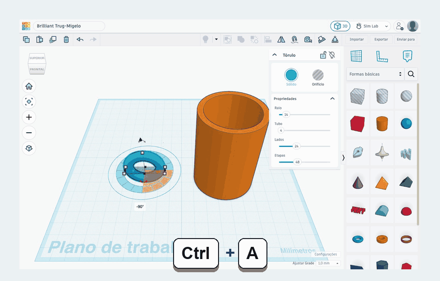
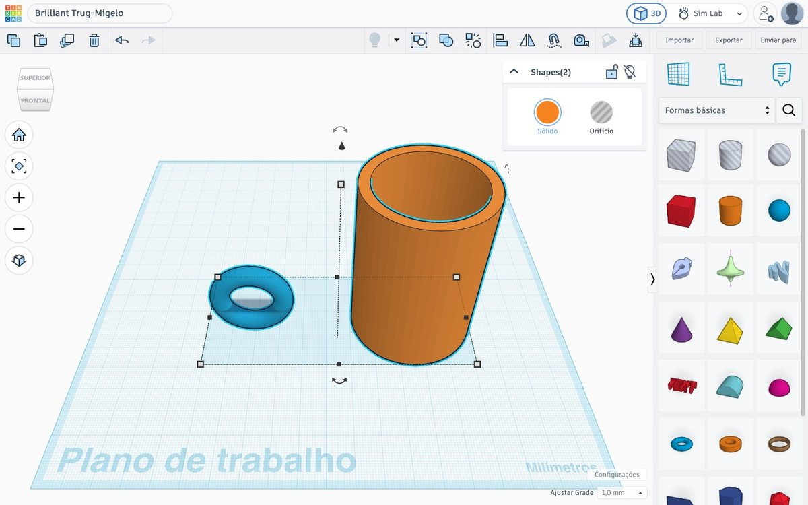
O clipe repete sozinho. Repare onde o cursor vai antes de clicar.
Foto da tela.
Clique num lugar vazio do plano, segure Ctrl e aperte A (no Mac, Cmd + A).
O copo e o anel ficam selecionados juntos: o painel passa a dizer Shapes(2).
- Selecionou só um
- Clique num lugar vazio do plano e aperte Ctrl + A de novo.
- O painel diz Shapes(3) ou mais
- Sobrou uma peça no plano. Apague a que está sobrando (clique nela e Delete) e refaça.
Abra o Alinhar
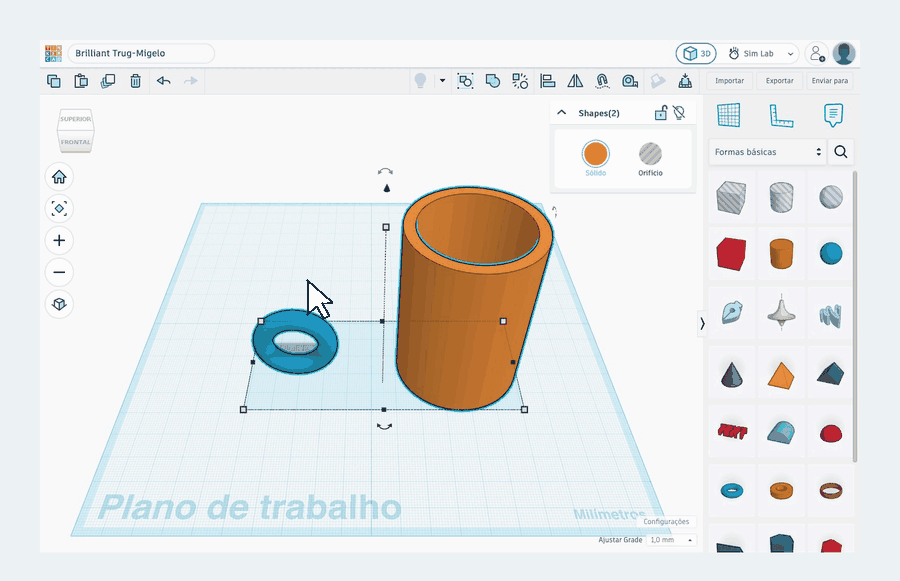
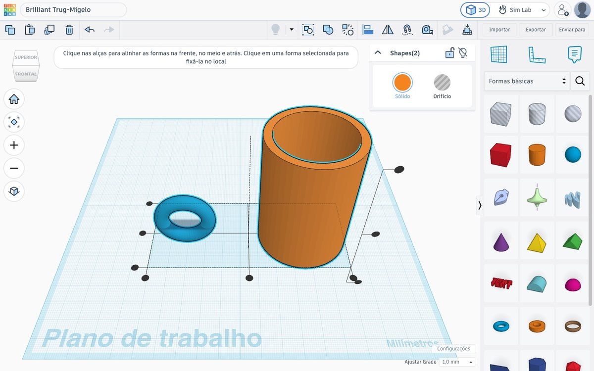
O clipe repete sozinho. Repare onde o cursor vai antes de clicar.
Foto da tela.
Na barra de cima, clique no botão Alinhar (ícone com linhas de tamanhos diferentes, ao lado do espelho).
Aparecem as nove bolinhas pretas em volta das duas peças, como na Aula 2: três embaixo, três do lado esquerdo e três do lado direito. E no alto, uma frase: Clique nas alças para alinhar as formas.
- As bolinhas não apareceram
- O Alinhar só abre com duas ou mais peças selecionadas. Volte ao passo 9.
- Não acho o botão
- Fica na barra de cima, no meio, ao lado do espelho. Passe o mouse e espere o nome aparecer.
FIXE o copo: clique nele
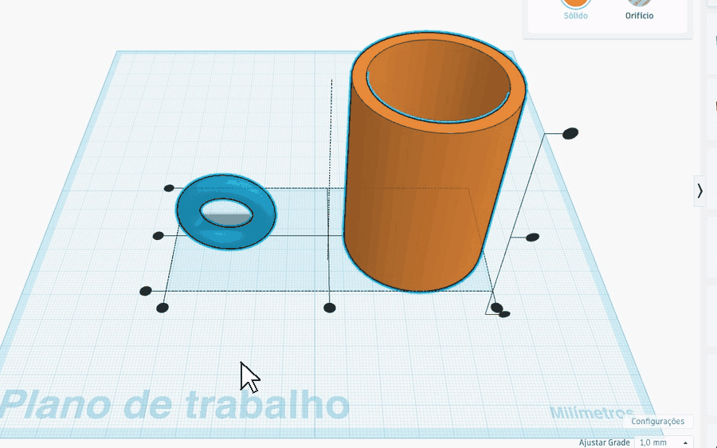
O clipe repete sozinho. Repare onde o cursor vai antes de clicar.
Foto da tela.
Este é o passo que ninguém adivinha. O Alinhar move todas as peças até uma linha comum: se você alinhar assim, é o copo que anda até o anel, e não o contrário.
A frase do alto avisa: clique em uma forma selecionada para fixá-la no local. Clique no copo: ele fica parado, e só o anel vai se mexer.
- Cliquei e a seleção sumiu
- Você clicou fora do copo. Aperte Ctrl + Z, abra o Alinhar de novo e clique bem em cima do copo.
- Não sei se fixou
- Siga os próximos passos: se o copo andar, volte ao passo 10 e fixe antes de clicar nas bolinhas.
Centro em Y: a bolinha do meio, à esquerda
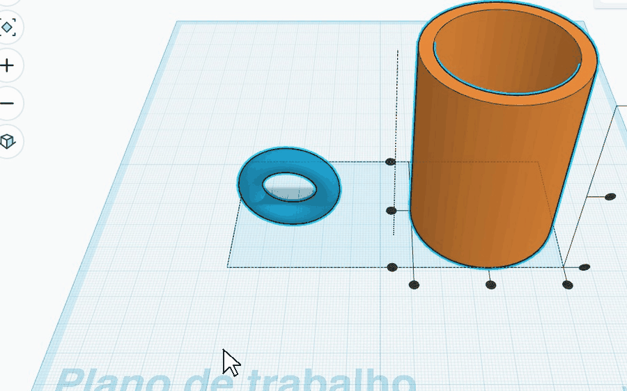
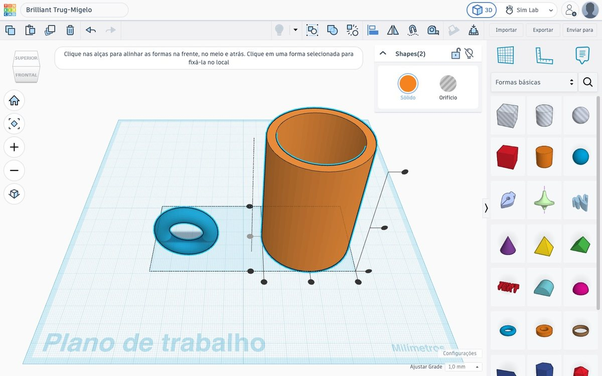
O clipe repete sozinho. Repare onde o cursor vai antes de clicar.
Foto da tela.
Clique na bolinha do meio da coluna da esquerda.
O anel se alinha com o copo de frente para trás: o centro do anel passa a estar na mesma linha do centro do copo.
- As bolinhas mudaram de lugar
- É normal: depois de cada clique elas se reposicionam. Procure de novo a do meio da esquerda.
- O copo é que andou
- Você não fixou o copo. Aperte Ctrl + Z e volte ao passo 11.
Centro em Z: a bolinha do meio, à direita
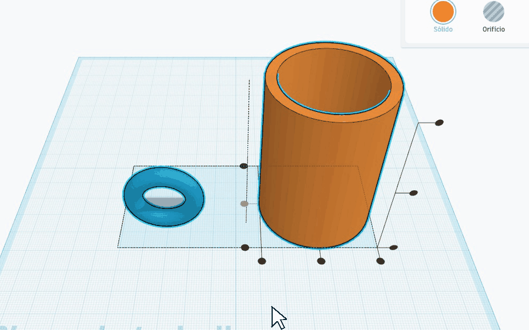
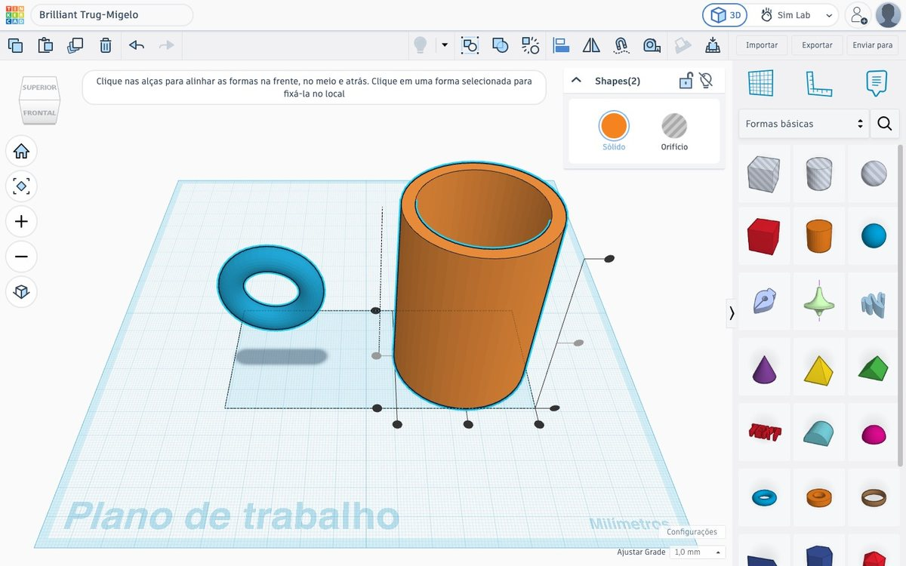
O clipe repete sozinho. Repare onde o cursor vai antes de clicar.
Foto da tela.
Clique na bolinha do meio da coluna da direita.
O anel sobe e fica na altura do meio do copo — no ar, com uma sombra no plano embaixo. É a altura certa para uma alça.
- Não vejo bolinha na direita
- Elas ficam do lado direito, em fila inclinada. Se alguma estiver cinza, é a que você acabou de clicar.
- O anel não subiu
- Você clicou numa bolinha de outro lado. A do meio da direita é a que alinha na altura.
Centro em X: a bolinha do meio, embaixo
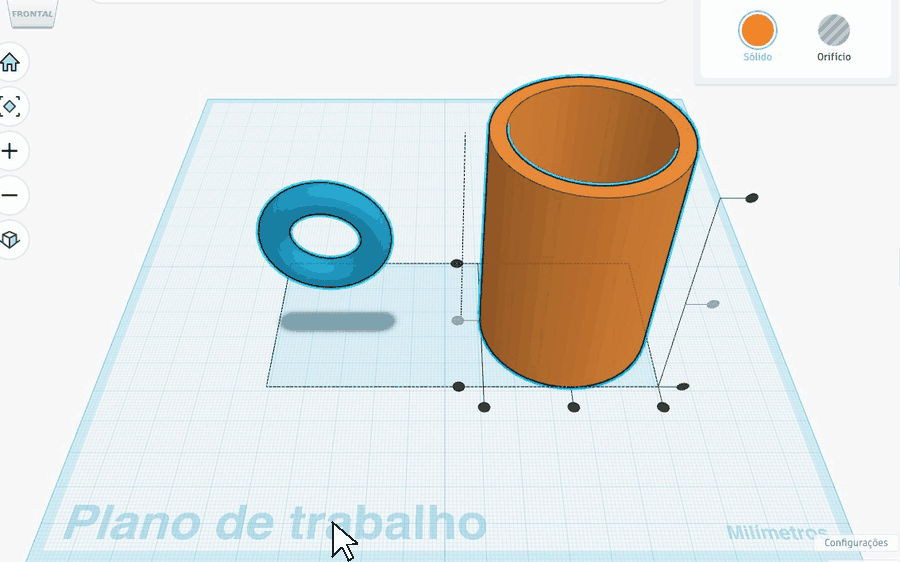
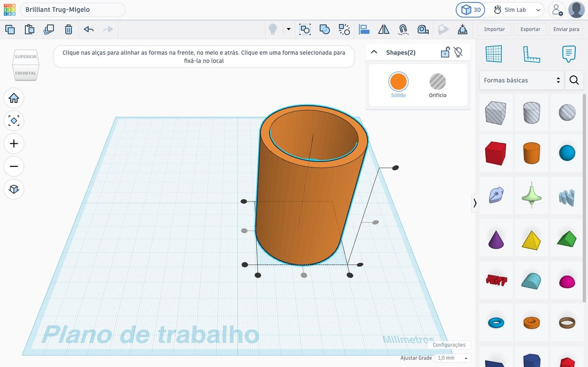
O clipe repete sozinho. Repare onde o cursor vai antes de clicar.
Foto da tela.
Clique na bolinha do meio da fileira de baixo.
O anel desliza para o meio do copo e some lá dentro: agora o centro dele está no mesmo ponto do centro do copo, nos três sentidos. Não se assuste: no próximo passo você o tira de lá, para o lado.
- O anel ficou do lado de fora
- Você ainda não clicou na bolinha do meio de baixo. Clique nela.
- O copo andou
- Você não fixou o copo no passo 11. Aperte Ctrl + Z três vezes, fixe o copo e refaça.
Esc e Shift + clique: deixe só o anel selecionado
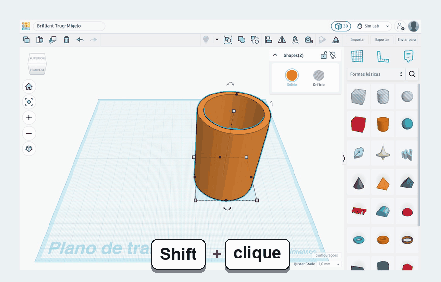
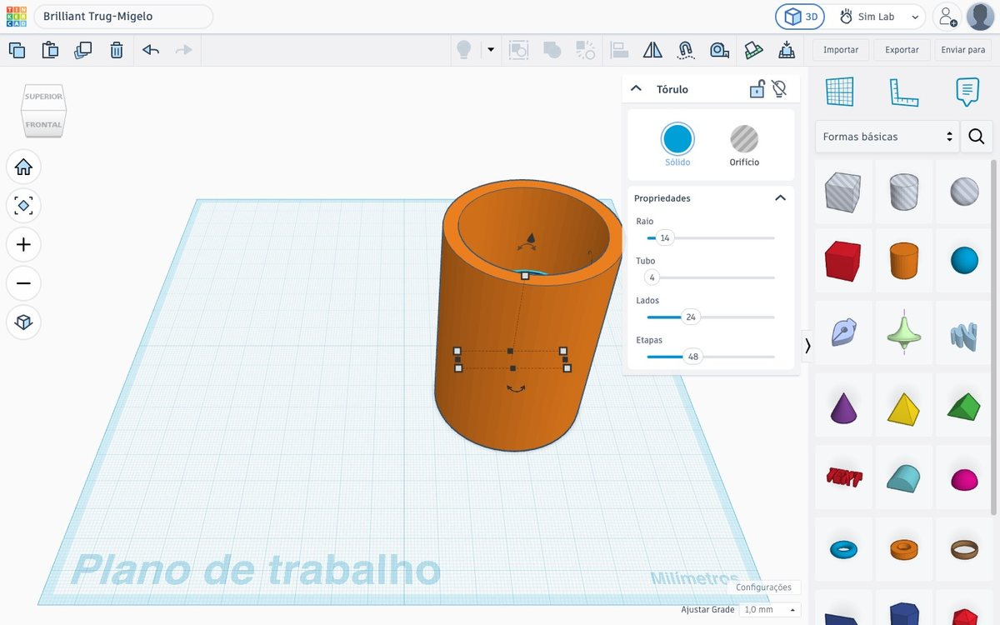
O clipe repete sozinho. Repare onde o cursor vai antes de clicar.
Foto da tela.
Aperte Esc: o Alinhar fecha e as duas peças continuam selecionadas.
Segure Shift e clique no copo: o Shift tira o copo da seleção. O painel passa a dizer Tórulo: agora só o anel está selecionado, mesmo escondido dentro do copo.
- O painel ainda diz Shapes(2)
- O clique não pegou no copo. Segure o Shift e clique bem no meio do corpo do copo.
- Desmarcou tudo
- Você soltou o Shift antes do clique. Aperte Ctrl + A de novo e refaça, com o Shift apertado durante o clique.
Empurre o anel: Shift + ←, quatro vezes
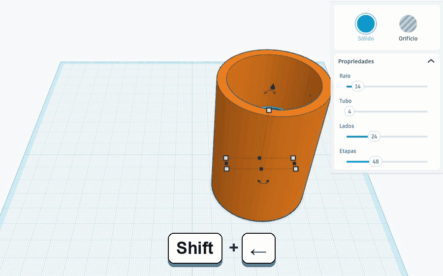
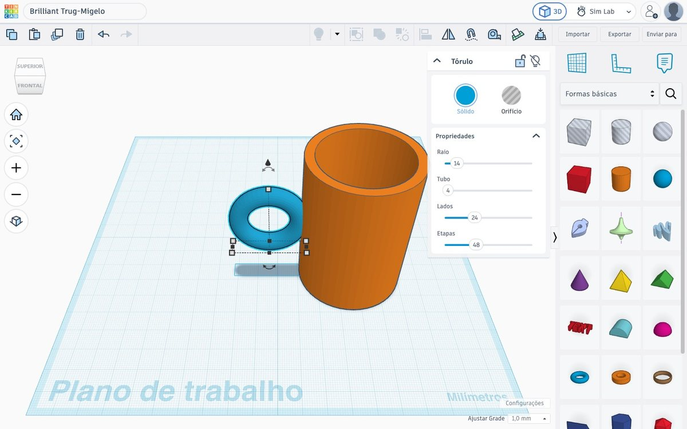
O clipe repete sozinho. Repare onde o cursor vai antes de clicar.
Foto da tela.
Com só o anel selecionado, segure Shift e aperte a seta para a esquerda ← quatro vezes, uma de cada vez.
Cada toque com o Shift anda 10 mm (a seta sem o Shift anda só 1). O anel sai de dentro do copo e para do lado esquerdo, com a ponta da direita enfiada na parede do copo: 4 × 10 = 40 mm.
- O anel foi demais ou de menos
- Cada toque é 10 mm. Volte com Shift + → ou avance com Shift + ← até dar quatro no total.
- A seta mexeu a câmera
- O anel não estava selecionado. Volte ao passo 15.
- O anel não se mexeu
- Clique uma vez no plano para dar foco e refaça o passo 15.
Selecione tudo de novo: Ctrl + A
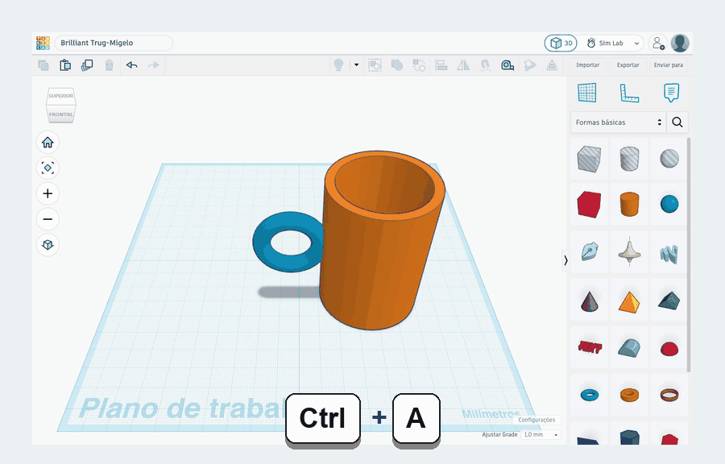
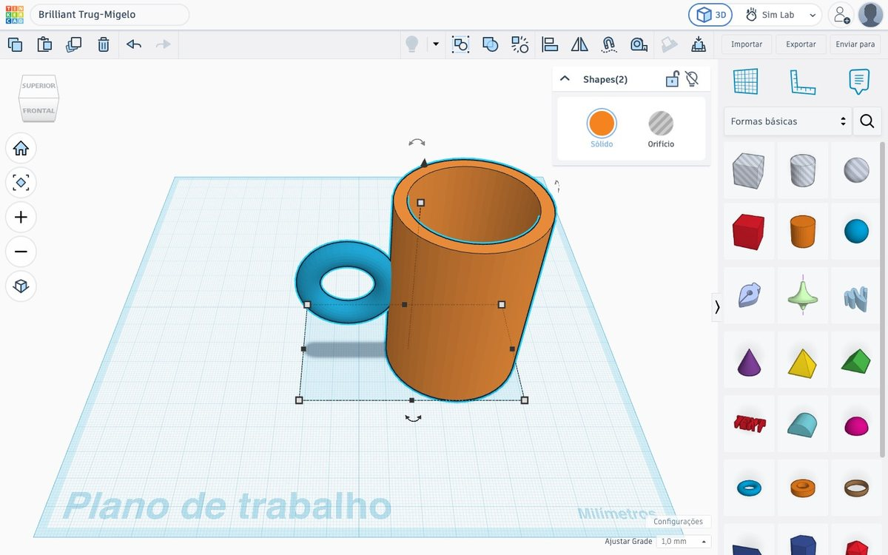
O clipe repete sozinho. Repare onde o cursor vai antes de clicar.
Foto da tela.
Clique num lugar vazio do plano, segure Ctrl e aperte A (no Mac, Cmd + A). O copo e o anel ficam selecionados juntos.
- Só um ficou selecionado
- Clique num lugar vazio do plano e aperte Ctrl + A de novo.
Agrupe: Grupo de união
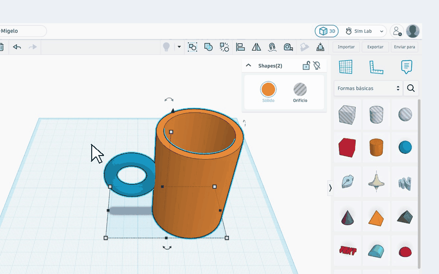
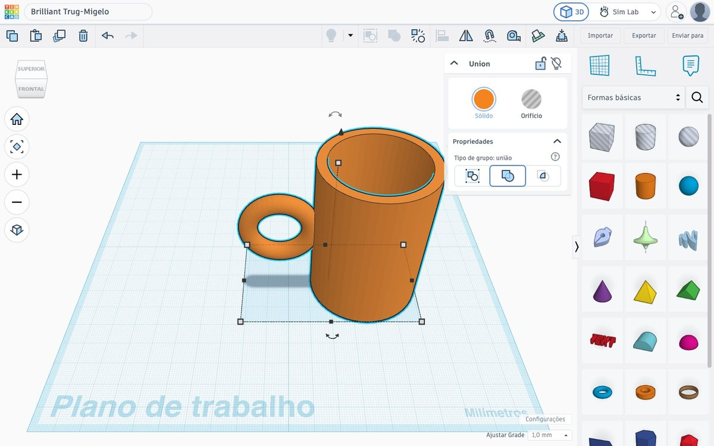
O clipe repete sozinho. Repare onde o cursor vai antes de clicar.
Foto da tela.
Na barra de cima há três botõezinhos de juntar peças, à direita do meio. Clique no do meio, o Grupo de união (ao passar o mouse aparece o nome).
O anel e o copo viram uma peça só, de uma cor só: a alça está colada. O painel passa a dizer Union.
- O anel ficou azul e solto
- O grupo não fechou. Clique no botão do meio, o Grupo de união, e não no da esquerda.
- Sumiu o anel
- Ele ficou dentro do copo. Aperte Ctrl + Z, volte ao passo 16 e empurre o anel quatro vezes.
- Não acho os botões
- Ficam na barra de cima, no grupo do meio, perto do espelho e do alinhar.
Olhe de frente: a alça está colada?
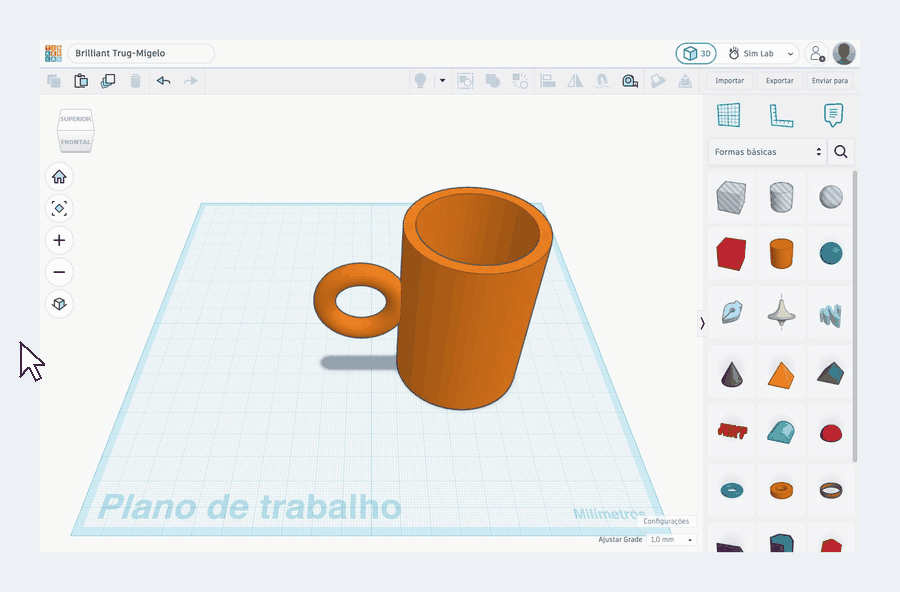
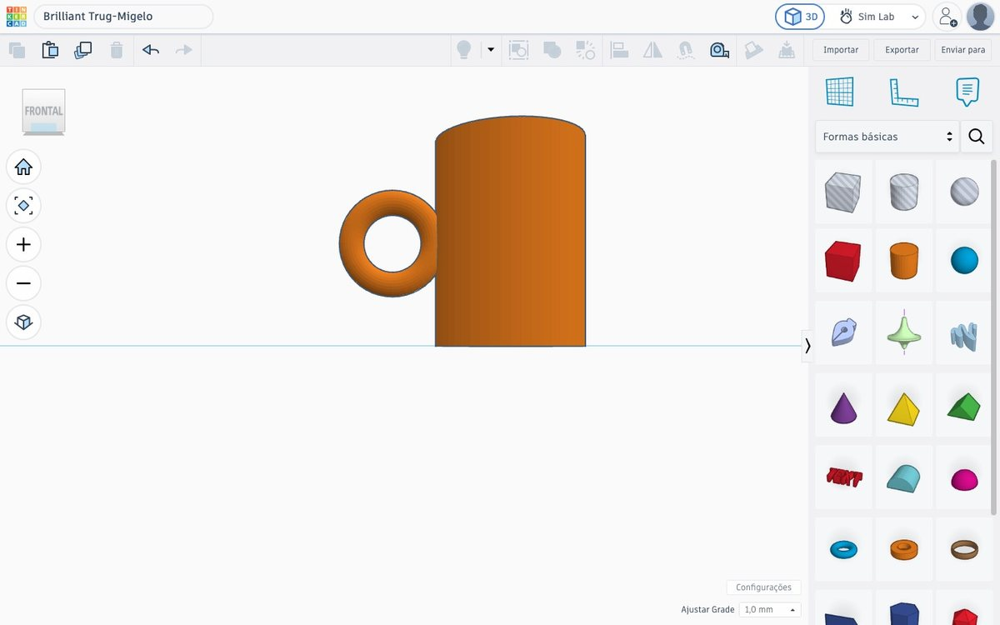
O clipe repete sozinho. Repare onde o cursor vai antes de clicar.
Foto da tela.
Clique num lugar vazio do plano para soltar a peça. No canto de cima à esquerda, no cubo de vistas, clique na face escrita FRONTAL.
A câmera desce e você vê a caneca de frente: o copo e, do lado, o anel da alça na altura do meio, encostado no copo, sem fresta entre os dois.
- Dá para ver uma fresta entre o anel e o copo
- O anel não chegou na parede. Desagrupe com Ctrl + Shift + G, clique só no anel (Shift + clique no copo) e empurre-o 1 mm com a seta ← sem o Shift.
- A alça sumiu
- Ela ficou dentro do copo. Volte ao passo 16.
- A câmera não mudou
- Clique na palavra FRONTAL do cubinho. Para voltar à vista inicial, use a casinha da barra da esquerda.
Dê um nome ao seu projeto
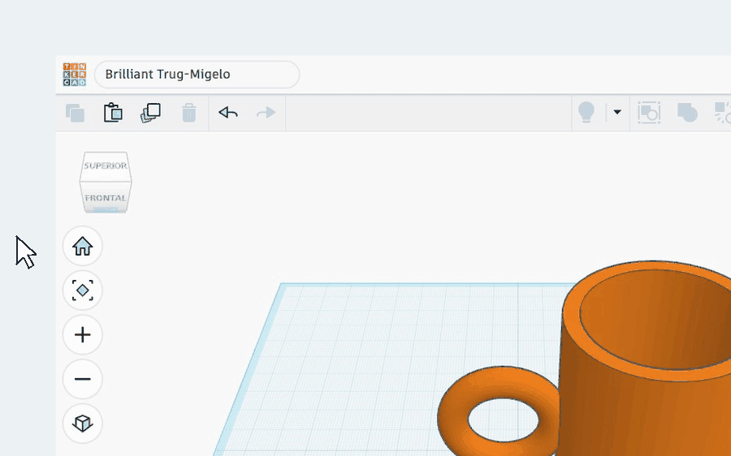
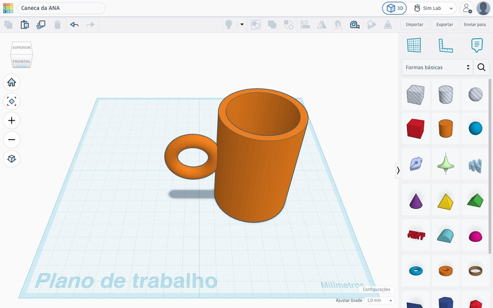
O clipe repete sozinho. Repare onde o cursor vai antes de clicar.
Foto da tela.
Clique na casinha da barra da esquerda para voltar à vista inicial. Depois clique no nome do projeto, no canto de cima à esquerda (o sorteado). Apague, escreva Caneca da ANA (ou o seu nome) e aperte Enter.
O Tinkercad salva sozinho. A caneca está guardada na sua conta, e o porta-lápis da Aula 2 também.
- O nome não mudou
- Falta o Enter. Clique no nome de novo e faça de novo.
- Clicou e o campo não abriu
- Clique em cima das letras do nome, e não ao lado.